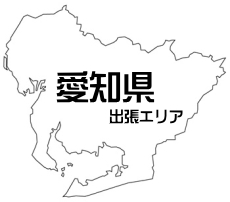

10月は液晶テレビの出張買取（訪問買取）高価買取月間です！
 弊社の経営スタイルは下記のように経費を削減し、お客様に買取価格で還元するというスタイルを揺らぬいております。
弊社の経営スタイルは下記のように経費を削減し、お客様に買取価格で還元するというスタイルを揺らぬいております。
名古屋市内で小型店舗運営により
家賃、光熱費、人件費の削減
名古屋市郊外の格安な大型倉庫による運営で家賃の節約
小型トラック、軽車両で燃料費節約
インターネットに広告媒体を集約し広告費の節約
買取品を家電・電化製品に絞った特化型リサイクルショップ
以上のように、高価買取の理由がおわかりいただけたでしょうか？
その逆で、大手買取店などは経費、人件費も莫大な額が掛かります。
高価買取するのは難しいのですが、殆どの方は大手リサイクルショップ
に売りに行ってしまうのが現状なのです。
他にも、店頭で長い時間待たされたり、出張も素早い対応が難しいのが現状です。
特に当店は出張買取は即日対応、名古屋市内なら最短30分でお伺い可能です。
一番大事にしているのがスピード重視です。御客様をお待たせしないスピード買取！
液晶テレビ名古屋買取 冷蔵庫名古屋買取 洗濯機名古屋買取 ブルーレイ名古屋買取
ドラム式洗濯機名古屋買取 ガスコンロ名古屋買取 空気清浄機名古屋買取
名古屋市で家電なら何でも買取ります。電化製品はお任せください！
冷蔵庫 ドラム式洗濯機 掃除機
ガスコンロ エアコン 食洗機
ファンヒーター 電子レンジ他
パソコン プリンター iphone
android ipad スマートフォン
携帯電話 ガラケー apple製品
衣類乾燥機 電子レンジ オーブンレンジ 炊飯器 炊 ガスコンロホームベーカリー 冷蔵庫 トースター 掃除機暖房器具 ワインセラー ミシン マッサージチェア 洗濯機ドラム式洗濯機 二層式 洗濯機 洗濯機 美顔器 エアコンルームエアコン デジタル家電 液晶テレビ ブルーレイレコーダー 一眼レフカメラ ミラーレスカメラ ビデオカメラ パソコン タブレット スマートフォン iPhone Mac カーナビ 製氷機 コールドテーブル 業務用冷蔵庫 業務用 冷凍冷蔵庫 食器洗浄機 券売機 アンプ 真空管アンプ スピーカー レコードプレーヤー デッキ 楽器・音響機材ギターアンプ エレキギター エレキベース 電子サックス トランペット 電子ドラム 電子ピアノ DJ機器 電動アシスト自転車 電動工具・機械工具インパクトドライバー インパクトレンチ 電動ドリル 釘打ち機 マルノコ 発電機 ホイスト エコキュート 給湯器 溶接機 高圧洗浄機 ハンマードリル ジグソー 墨出器 測量機器 ポリッシャー エアーコンプレッサー サンダー・グラインダー ねじ切り機 シャーレンチ チェーンソー ブロワ 集じん機 全自動麻雀機 ビルトインコンロ ビルトイン食器洗機
名古屋市で家電の不用品回収もお任せください
エアコン、液晶テレビなら製造から7~8年以上の古いものでも引き取りができる場合があります。
また、その他のモノもお尋ねください。買取品と一緒の引き取りなら無料で
引き取りができるものも御座います。
愛知県 対応エリア一覧
名古屋市 
中区,中川区,中村区,北区,千種区,南区,名東区
天白区,守山区,昭和区,東区,港区,熱田区,瑞穂区,緑区,西区
尾張地区
一宮市,七宝町,北名古屋市,大口町,大治町,小牧市,尾張旭市
岩倉市,弥富市,愛西市,扶桑町,日進市,春日井市,東郷町
江南市,津島市,清須市,瀬戸市,犬山市,あま市,稲沢市
美和町,蟹江町,豊山町,豊明市,あま市,飛島村,長久手市
三河・知多地区
半田市,大府市,常滑市,東浦町,東海市,武豊町,阿久比町
刈谷市,安城市,知立市,みよし市,豊田市
※商品によっては出張買取できないものがあります。
また、上記でもお伺いできない地域も御座います。
予告なくＨＰ内容も変更する場合があります。
詳しくは御電話にてお尋ね下さい。0120－105－964